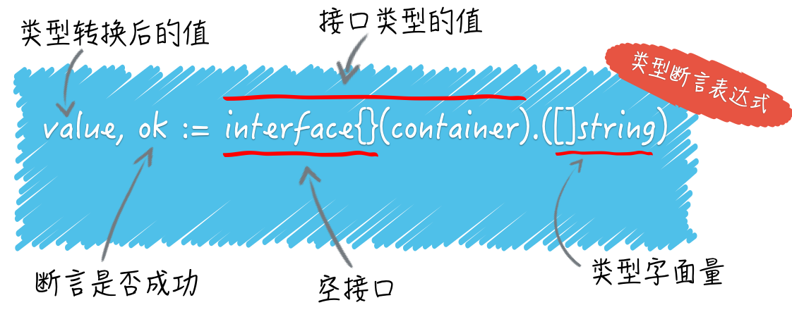
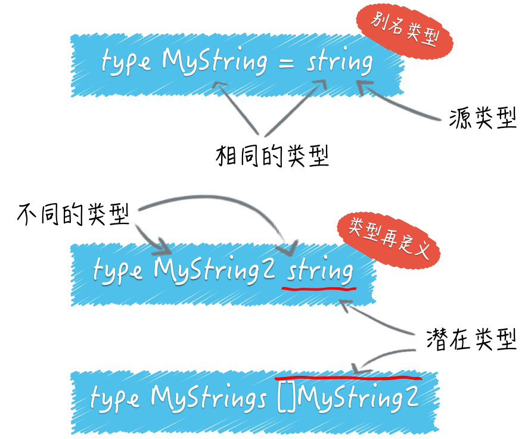

- 00 导读 写给0基础入门的Go语言学习者.md.html
- 00 导读 学习专栏的正确姿势.md.html
- 00 开篇词 跟着学，你也能成为Go语言高手.md.html
- 01 工作区和GOPATH.md.html
- 02 命令源码文件.md.html
- 03 库源码文件.md.html
- 04 程序实体的那些事儿（上）.md.html
- 05 程序实体的那些事儿（中）.md.html
- 06 程序实体的那些事儿 （下）.md.html
- 07 数组和切片.md.html
- 08 container包中的那些容器.md.html
- 09 字典的操作和约束.md.html
- 10 通道的基本操作.md.html
- 11 通道的高级玩法.md.html
- 12 使用函数的正确姿势.md.html
- 13 结构体及其方法的使用法门.md.html
- 14 接口类型的合理运用.md.html
- 15 关于指针的有限操作.md.html
- 16 go语句及其执行规则（上）.md.html
- 17 go语句及其执行规则（下）.md.html
- 18 if语句、for语句和switch语句.md.html
- 19 错误处理（上）.md.html
- 20 错误处理 （下）.md.html
- 21 panic函数、recover函数以及defer语句 （上）.md.html
- 22 panic函数、recover函数以及defer语句（下）.md.html
- 23 测试的基本规则和流程 （上）.md.html
- 24 测试的基本规则和流程（下）.md.html
- 25 更多的测试手法.md.html
- 26 sync.Mutex与sync.RWMutex.md.html
- 27 条件变量sync.Cond （上）.md.html
- 28 条件变量sync.Cond （下）.md.html
- 29 原子操作（上）.md.html
- 30 原子操作（下）.md.html
- 31 sync.WaitGroup和sync.Once.md.html
- 32 context.Context类型.md.html
- 33 临时对象池sync.Pool.md.html
- 34 并发安全字典sync.Map （上）.md.html
- 35 并发安全字典sync.Map (下).md.html
- 36 unicode与字符编码.md.html
- 37 strings包与字符串操作.md.html
- 38 bytes包与字节串操作（上）.md.html
- 39 bytes包与字节串操作（下）.md.html
- 40 io包中的接口和工具 （上）.md.html
- 41 io包中的接口和工具 （下）.md.html
- 42 bufio包中的数据类型 （上）.md.html
- 43 bufio包中的数据类型（下）.md.html
- 44 使用os包中的API （上）.md.html
- 45 使用os包中的API （下）.md.html
- 46 访问网络服务.md.html
- 47 基于HTTP协议的网络服务.md.html
- 48 程序性能分析基础（上）.md.html
- 49 程序性能分析基础（下）.md.html
- 尾声 愿你披荆斩棘，所向无敌.md.html
- 新年彩蛋 完整版思考题答案.md.html
- 捐赠
06 程序实体的那些事儿 （下）
在上一篇文章，我们一直都在围绕着可重名变量，也就是不同代码块中的重名变量，进行了讨论。
还记得吗？最后我强调，如果可重名变量的类型不同，那么就需要引起我们的特别关注了，它们之间可能会存在“屏蔽”的现象。
必要时，我们需要严格地检查它们的类型，但是怎样检查呢？咱们现在就说。
我今天的问题是：怎样判断一个变量的类型？
我们依然以在上一篇文章中展示过的demo11.go为基础。
package main
import "fmt"
var container = []string{"zero", "one", "two"}
func main() {
container := map[int]string{0: "zero", 1: "one", 2: "two"}
fmt.Printf("The element is %q.\n", container[1])
}
那么，怎样在打印其中元素之前，正确判断变量container的类型？
典型回答
答案是使用“类型断言”表达式。具体怎么写呢？
value, ok := interface{}(container).([]string)
这里有一条赋值语句。在赋值符号的右边，是一个类型断言表达式。
它包括了用来把container变量的值转换为空接口值的interface{}(container)。
以及一个用于判断前者的类型是否为切片类型 []string 的 .([]string)。
这个表达式的结果可以被赋给两个变量，在这里由value和ok代表。变量ok是布尔（bool）类型的，它将代表类型判断的结果，true或false。
如果是true，那么被判断的值将会被自动转换为[]string类型的值，并赋给变量value，否则value将被赋予nil（即“空”）。
顺便提一下，这里的ok也可以没有。也就是说，类型断言表达式的结果，可以只被赋给一个变量，在这里是value。
但是这样的话，当判断为否时就会引发异常。
这种异常在Go语言中被叫做panic，我把它翻译为运行时恐慌。因为它是一种在Go程序运行期间才会被抛出的异常，而“恐慌”二字是英文Panic的中文直译。
除非显式地“恢复”这种“恐慌”，否则它会使Go程序崩溃并停止。所以，在一般情况下，我们还是应该使用带ok变量的写法。
问题解析
正式说明一下，类型断言表达式的语法形式是x.(T)。其中的x代表要被判断类型的值。这个值当下的类型必须是接口类型的，不过具体是哪个接口类型其实是无所谓的。
所以，当这里的container变量类型不是任何的接口类型时，我们就需要先把它转成某个接口类型的值。
如果container是某个接口类型的，那么这个类型断言表达式就可以是container.([]string)。这样看是不是清晰一些了？
在Go语言中，interface{}代表空接口，任何类型都是它的实现类型。我在下个模块，会再讲接口及其实现类型的问题。现在你只要知道，任何类型的值都可以很方便地被转换成空接口的值就行了。
这里的具体语法是interface{}(x)，例如前面展示的interface{}(container)。
你可能会对这里的{}产生疑惑，为什么在关键字interface的右边还要加上这个东西？
请记住，一对不包裹任何东西的花括号，除了可以代表空的代码块之外，还可以用于表示不包含任何内容的数据结构（或者说数据类型）。
比如你今后肯定会遇到的struct{}，它就代表了不包含任何字段和方法的、空的结构体类型。
而空接口interface{}则代表了不包含任何方法定义的、空的接口类型。
当然了，对于一些集合类的数据类型来说，{}还可以用来表示其值不包含任何元素，比如空的切片值[]string{}，以及空的字典值map[int]string{}。

（类型断言表达式）
我们再向答案的最右边看。圆括号中[]string是一个类型字面量。所谓类型字面量，就是用来表示数据类型本身的若干个字符。
比如，string是表示字符串类型的字面量，uint8是表示8位无符号整数类型的字面量。
再复杂一些的就是我们刚才提到的[]string，用来表示元素类型为string的切片类型，以及map[int]string，用来表示键类型为int、值类型为string的字典类型。
还有更复杂的结构体类型字面量、接口类型字面量，等等。这些描述起来占用篇幅较多，我在后面再说吧。
针对当前的这个问题，我写了demo12.go。它是demo11.go的修改版。我在其中分别使用了两种方式来实施类型断言，一种用的是我上面讲到的方式，另一种用的是我们还没讨论过的switch语句，先供你参考。
可以看到，当前问题的答案可以只有一行代码。你可能会想，这一行代码解释起来也太复杂了吧？
千万不要为此烦恼，这其中很大一部分都是一些基本语法和概念，你只要记住它们就好了。但这也正是我要告诉你的，一小段代码可以隐藏很多细节。面试官可以由此延伸到几个方向继续提问。这有点儿像泼墨，可以迅速由点及面。
知识扩展
问题1. 你认为类型转换规则中有哪些值得注意的地方？
类型转换表达式的基本写法我已经在前面展示过了。它的语法形式是T(x)。
其中的x可以是一个变量，也可以是一个代表值的字面量（比如1.23和struct{}{}），还可以是一个表达式。
注意，如果是表达式，那么该表达式的结果只能是一个值，而不能是多个值。在这个上下文中，x可以被叫做源值，它的类型就是源类型，而那个T代表的类型就是目标类型。
如果从源类型到目标类型的转换是不合法的，那么就会引发一个编译错误。那怎样才算合法？具体的规则可参见Go语言规范中的转换部分。
我们在这里要关心的，并不是那些Go语言编译器可以检测出的问题。恰恰相反，那些在编程语言层面很难检测的东西才是我们应该关注的。
很多初学者所说的陷阱（或者说坑），大都源于他们需要了解但却不了解的那些知识和技巧。因此，在这些规则中，我想抛出三个我认为很常用并且非常值得注意的知识点，提前帮你标出一些“陷阱”。
首先，对于整数类型值、整数常量之间的类型转换，原则上只要源值在目标类型的可表示范围内就是合法的。
比如，之所以uint8(255)可以把无类型的常量255转换为uint8类型的值，是因为255在[0, 255]的范围内。
但需要特别注意的是，源整数类型的可表示范围较大，而目标类型的可表示范围较小的情况，比如把值的类型从int16转换为int8。请看下面这段代码：
var srcInt = int16(-255)
dstInt := int8(srcInt)
变量srcInt的值是int16类型的-255，而变量dstInt的值是由前者转换而来的，类型是int8。int16类型的可表示范围可比int8类型大了不少。问题是，dstInt的值是多少？
首先你要知道，整数在Go语言以及计算机中都是以补码的形式存储的。这主要是为了简化计算机对整数的运算过程。（负数的）补码其实就是原码各位求反再加1。
比如，int16类型的值-255的补码是1111111100000001。如果我们把该值转换为int8类型的值，那么Go语言会把在较高位置（或者说最左边位置）上的8位二进制数直接截掉，从而得到00000001。
又由于其最左边一位是0，表示它是个正整数，以及正整数的补码就等于其原码，所以dstInt的值就是1。
一定要记住，当整数值的类型的有效范围由宽变窄时，只需在补码形式下截掉一定数量的高位二进制数即可。
类似的快刀斩乱麻规则还有：当把一个浮点数类型的值转换为整数类型值时，前者的小数部分会被全部截掉。
第二，虽然直接把一个整数值转换为一个string类型的值是可行的，但值得关注的是，被转换的整数值应该可以代表一个有效的Unicode代码点，否则转换的结果将会是"�"（仅由高亮的问号组成的字符串值）。
字符'�'的Unicode代码点是U+FFFD。它是Unicode标准中定义的Replacement Character，专用于替换那些未知的、不被认可的以及无法展示的字符。
我肯定不会去问“哪个整数值转换后会得到哪个字符串”，这太变态了！但是我会写下：
string(-1)
并询问会得到什么？这可是完全不同的问题啊。由于-1肯定无法代表一个有效的Unicode代码点，所以得到的总会是"�"。在实际工作中，我们在排查问题时可能会遇到�，你需要知道这可能是由于什么引起的。
第三个知识点是关于string类型与各种切片类型之间的互转的。
你先要理解的是，一个值在从string类型向[]byte类型转换时代表着以UTF-8编码的字符串会被拆分成零散、独立的字节。
除了与ASCII编码兼容的那部分字符集，以UTF-8编码的某个单一字节是无法代表一个字符的。
string([]byte{'\xe4', '\xbd', '\xa0', '\xe5', '\xa5', '\xbd'}) // 你好
比如，UTF-8编码的三个字节\xe4、\xbd和\xa0合在一起才能代表字符'你'，而\xe5、\xa5和\xbd合在一起才能代表字符'好'。
其次，一个值在从string类型向[]rune类型转换时代表着字符串会被拆分成一个个Unicode字符。
string([]rune{'\u4F60', '\u597D'}) // 你好
当你真正理解了Unicode标准及其字符集和编码方案之后，上面这些内容就会显得很容易了。什么是Unicode标准？我会首先推荐你去它的官方网站一探究竟。
问题2. 什么是别名类型？什么是潜在类型？
我们可以用关键字type声明自定义的各种类型。当然了，这些类型必须在Go语言基本类型和高级类型的范畴之内。在它们当中，有一种被叫做“别名类型”的类型。我们可以像下面这样声明它：
type MyString = string
这条声明语句表示，MyString是string类型的别名类型。顾名思义，别名类型与其源类型的区别恐怕只是在名称上，它们是完全相同的。
源类型与别名类型是一对概念，是两个对立的称呼。别名类型主要是为了代码重构而存在的。更详细的信息可参见Go语言官方的文档Proposal: Type Aliases。
Go语言内建的基本类型中就存在两个别名类型。byte是uint8的别名类型，而rune是int32的别名类型。
一定要注意，如果我这样声明：
type MyString2 string // 注意，这里没有等号。
MyString2和string就是两个不同的类型了。这里的MyString2是一个新的类型，不同于其他任何类型。
这种方式也可以被叫做对类型的再定义。我们刚刚把string类型再定义成了另外一个类型MyString2。
- （别名类型、类型再定义与潜在类型）
对于这里的类型再定义来说，string可以被称为MyString2的潜在类型。潜在类型的含义是，某个类型在本质上是哪个类型。
潜在类型相同的不同类型的值之间是可以进行类型转换的。因此，MyString2类型的值与string类型的值可以使用类型转换表达式进行互转。
但对于集合类的类型[]MyString2与[]string来说这样做却是不合法的，因为[]MyString2与[]string的潜在类型不同，分别是[]MyString2和[]string。另外，即使两个不同类型的潜在类型相同，它们的值之间也不能进行判等或比较，它们的变量之间也不能赋值。
总结
在本篇文章中，我们聚焦于类型。Go语言中的每个变量都是有类型的，我们可以使用类型断言表达式判断变量是哪个类型的。
正确使用该表达式需要一些小技巧，比如总是应该把结果赋给两个变量。另外还要保证被判断的变量是接口类型的，这可能会用到类型转换表达式。
我们在使用类型转换表达式对变量的类型进行转换的时候，会受到一套规则的严格约束。
我们必须关注这套规则中的一些细节，尤其是那些Go语言命令不会帮你检查的细节，否则就会踩进所谓的“陷阱”中。
此外，你还应该搞清楚别名类型声明与类型再定义之间的区别，以及由此带来的它们的值在类型转换、判等、比较和赋值操作方面的不同。
思考题
本篇文章的思考题有两个。
- 除了上述提及的那些，你还认为类型转换规则中有哪些值得注意的地方？
- 你能具体说说别名类型在代码重构过程中可以起到哪些作用吗？
这些问题的答案都在文中提到的官方文档之中。
© 2019 - 2023 Liangliang Lee. Powered by gin and hexo-theme-book.